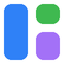
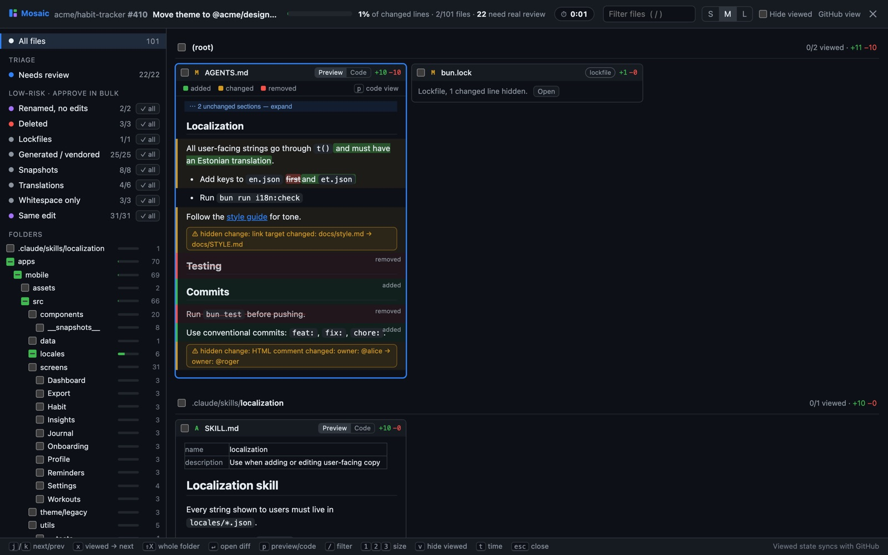

Mosaic GitHubEvery changed file at once, low-risk files sorted into groups you can approve in bulk, and GitHub's “Viewed” checkboxes kept in sync.
Mosaic needs a Chromium-based browser such as Chrome, Edge, Brave or Arc. It doesn't run in Firefox or Safari.

Mosaic isn't in the Chrome Web Store yet, so Chrome can't install it in one click. Loading it yourself takes four steps and about a minute.
Put the folder somewhere permanent. Chrome runs Mosaic from it, so don't delete it afterwards.
chrome://extensions
Paste it into the address bar. Browsers don't let web pages link there directly. In Edge it's
edge://extensions.
The switch is in the top-right corner of the extensions page.
Choose the folder that contains manifest.json.
Extensions installed this way don't update themselves. To update, unzip the
latest mosaic.zip
into the same folder, replacing the old files, then click the reload button ↻ on Mosaic's card in
chrome://extensions. Keeping the same folder keeps your settings and time-saved stats.
All releases
Made for pull requests too big to review one file at a time.
Every file's diff is shown in a grid of tiles. No lazy loading and no clicking from file to file.
Renamed, deleted, generated, lockfile, snapshot, translation, whitespace-only and identical-edit files are grouped, and each group can be marked viewed with one click, with undo.
Test files show one row per test with its line counts. Click a row to see its code.
Rendered docs with changes highlighted, plus warnings for edits that don't show when rendered, such as changed link targets or HTML comments.
Ticking a file in Mosaic marks it viewed on GitHub, and the other way round.
j/k to move between files, x to mark viewed, / to filter and v to hide viewed files.
Mosaic has no server, no analytics and no tokens. It talks only to github.com, using the session you're already signed in with, and everything it stores stays in your browser. The source is on GitHub for anyone to check.
Found a bug or have an idea? Open an issue or send a pull request. The README explains how to build and test it.